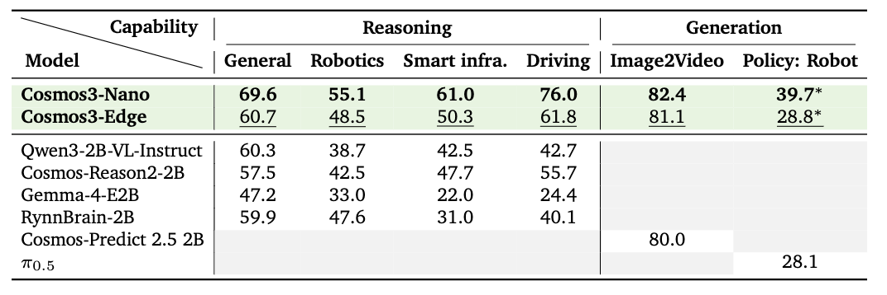
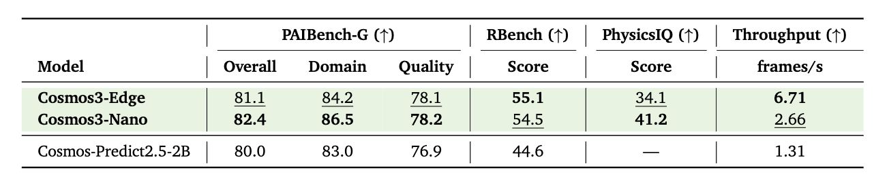

Cosmos 3: Omnimodal World Models for Physical AI
Cosmos3 | Cosmos3 Examples | Code | White Paper | Website
NVIDIA Cosmos™ is a world foundation model platform designed to accelerate the development of Physical AI by enabling machines to understand, simulate, and interact with the physical world across robotics, autonomous driving, and smart space environments, including industrial and factory-scale applications.
Model Overview: Cosmos3-Edge
Description
Cosmos3 is a collection of Omnimodal world models capable of generating dynamic, high-quality video, image, audio, and action commands from combinations of text, image, video, and action trajectory inputs. It serves as a foundational building block for a broad range of Physical AI applications and research spanning world understanding, world generation, simulation, and embodied policy learning.
This model is ready for commercial and non-commercial use.
Update — August 25, 2026: The Cosmos3-Edge generator checkpoint, runtime defaults, usage examples, and benchmark results have been updated. Users pulling from main should refresh their local snapshot. See the update announcement for compatibility and reproducibility details.Model Developer: NVIDIA
Model Versions
Released on: 07/20/2026
- Cosmos3-Edge:
- Given multimodal inputs including text, images, video, and action trajectories, generate coherent text, images, video, and action outputs for multimodal understanding, world simulation, future prediction, action reasoning, and Physical AI applications.
License
This model is released under the OpenMDW1.1
Deployment Geography
Global
Use Case
Physical AI: Encompassing robotics, autonomous vehicles (AV), and smart space environments, including industrial and factory-scale applications.
Release Date
Hugging Face 07/20/2026 via https://huggingface.co/collections/nvidia/cosmos3 GitHub 07/20/2026 via https://github.com/nvidia/cosmos
Model Architecture
Architecture Type: Transformer
Network Architecture: Mixture-of-Transformers (MoT)
Cosmos3 is an Omni-modal foundation model built on a Mixture-of-Transformers (MoT) architecture consisting of two complementary transformer towers: an autoregressive transformer for discrete token generation and a diffusion transformer for continuous multimodal generation. During inference, text is generated through standard next-token autoregressive decoding, while non-text modalities, such as images, video, audio, and actions, are synthesized through iterative denoising. This unified architecture enables Cosmos3 to model heterogeneous modalities within a single framework while preserving generation mechanisms best suited to each modality.
This model was developed based on: Cosmos Framework
Number of trainable model parameters:
Released on: 07/20/2026
- Cosmos3-Edge: 4B
Input/Output Specifications
- Generator Input
- Input Type(s): Text, Image, Action Trajectory
- Input Format(s):
- Text: String
- Image: jpg, png, jpeg, webp
- Action: JSON — 2D array shaped (T, D), where T is the number of frames and D is the embodiment-specific dimensionality
- Input Parameters:
- Text: One-dimensional (1D)
- Image: Two-dimensional (2D)
- Action trajectory: Two-dimensional (2D)
- Other Properties Related to Input:
- Image input is RGB color (8 bits per channel, sRGB color space); grayscale inputs are not supported.
- Action input is a per-frame sequence of robot/agent state or control values (e.g., joint positions, gripper state, camera pose). The full input is a 2D array shaped (T, D), where T is the number of frames and D is the embodiment-specific dimensionality listed below.
- Input action is only supported for compatible embodiments, including general camera motion (9D), autonomous vehicle (9D), egocentric motion (57D), single Franka Panda arm with RobotiQ gripper (10D), dual Franka Panda arm with RobotiQ gripper (20D), Agibot (29D), UR (10D), Google robot (10D), WidowX 250 (10D), UMI (10D).
- Input Size and Length limits:
- Text: 4096 tokens
- Image: 256p and 480p resolution at one of these aspect ratios (16:9, 4:3, 1:1, 3:4, 9:16)
- Action: 16 – 400 sequence length
- Generator Output
- Output Type(s): Image, video, action, text
- Output Format(s):
- Image: JPG
- Video: MP4
- Action: JSON
- Text: string
- Output Parameters:
- Image: Two-dimensional (2D)
- Video: Three-dimensional (3D)
- Action: Two-dimensional (2D)
- Text: One-dimensional (1D)
- Other Properties Related to Output:
- The generated video is an MP4 file, with the resolution, frame rate, and duration specified in the input.
- Video generation supports 256p and 480p resolution, 12–30 fps, and 50–150 frames. These are set per request via the
size,fps, andnum_framesfields. - The generated action is only supported for compatible embodiments, including general camera motion (9D), autonomous vehicle (9D), egocentric motion (57D), single Franka Panda arm with RobotiQ gripper (10D), dual Franka Panda arm with RobotiQ gripper (20D), Agibot (29D), UR (10D), Google robot (10D), WidowX 250 (10D), UMI (10D).
- Video: mp4 at the FPS specified in input
- Image: JPEG
- Reasoner Input
- Input Type(s): Text, Text+Image, Text+Video
- Input Format(s):
- Text: String
- Image: jpg, png, jpeg, webp
- Video: mp4
- Input Parameters:
- Text: One-dimensional (1D)
- Image: Two-dimensional (2D)
- Video: Three-dimensional (3D)
- Other Properties Related to Input:
- Video inputs are recommended at a frame rate of 4 fps.
- Long-context inputs supported up to 256K tokens.
- Input Size and Length limits:
- Text: Up to 256K tokens (context window).
- Image: Standard input image formats; passed as file or URL.
- Video: mp4 at the recommended 4 fps.
- Reasoner Output
- Output Type(s): Text
- Output Format(s):
- Text: string
- Output Parameters:
- Text: One-dimensional (1D)
- Other Properties Related to Output:
- Default
max_tokens=4096+is recommended for reasoning outputs; longer outputs may be requested. - Reasoning outputs may include structured chain-of-thought, 2D/3D point localization, and bounding-box coordinates for vision-based tasks.
The video content visualizes the input text description as a short animated scene, capturing key elements within the specified time constraints.
Our AI models are designed and/or optimized to run on NVIDIA GPU-accelerated systems. By leveraging NVIDIA's hardware (e.g., GPU cores) and software frameworks (e.g., CUDA libraries), the model achieves faster training and inference times compared to CPU-only solutions.
Software Integration
Runtime Engine(s):
Supported Hardware Microarchitecture Compatibility:
- NVIDIA Ampere
- NVIDIA Blackwell
- NVIDIA Hopper
Operating System(s):
- Linux (We have not tested on other operating systems.)
Note: Only BF16 precision is tested. Other precisions like FP4, FP8, and FP16 are not officially supported.
The integration of foundation and fine-tuned models into AI systems requires additional testing using use-case-specific data to ensure safe and effective deployment. Following the V-model methodology, iterative testing and validation at both unit and system levels are essential to mitigate risks, meet technical and functional requirements, and ensure compliance with safety and ethical standards before deployment.
Training, Testing, and Evaluation Datasets
Dataset Overview
- Total Size: 1.3B data points
- Total Number of Datasets: 393 dataset entries
- Dataset partition: Training [100%], Testing [N/A — evaluation benchmarks used separately], Validation [N/A — evaluation benchmarks used separately]
- Time period for training data collection: 2024–2026
- Time period for testing data collection: N/A (standard public benchmarks)
- Time period for validation data collection: N/A (standard public benchmarks)
Raw data from internal and external sources is transformed into training-ready data through multiple stages of curation, filtering, and quality review. Data acquisition spans diverse multimodal sources — robotics, autonomous driving, industrial environments, indoor and outdoor scenes, varied lighting and weather conditions, camera viewpoints, object categories, and human activities — to broaden coverage across Physical AI operating environments. Automated filtering pipelines remove corrupted, duplicate, low-quality, and restricted content. Metadata analysis, heuristic rules, and model-assisted classifiers are applied during preprocessing to flag anomalous distributions and low-diversity subsets. Human review supplements automated filtering for selected datasets, benchmark construction, and targeted quality analysis. Datasets are balanced across modalities and task categories — visual reasoning, text-to-image, text-to-video, image-to-video, video transfer, action-conditioned generation, and action command generation — to reduce overrepresentation of narrow domains. Synthetic and simulation-based augmentation supplements coverage of rare physical interactions and edge-case scenarios. Deduplication and provenance tracking are applied across the corpus. The resulting processed data is converted into model-ready tokenized or encoded representations through modality-specific preprocessors before training begins.
Training datasets passed through multiple layers of automated and manual safeguards designed to reduce the presence of harmful or policy-violating content across categories including weapons and weapons-related instructional content, criminal planning, child sexual abuse material (CSAM), non-consensual intimate imagery (NCII), sexual content involving minors, harassment, hate speech, profanity, threats and incitement to violence, self-harm or suicide-related content, and graphic violence. Data sources are reviewed for licensing compatibility, provenance, and alignment with internal data governance and safety policies before admission into training corpora. Automated filtering pipelines combine multiple detection strategies: hash-matching against known CSAM and NCII reference databases; classifier-based moderation models trained for explicit sexual content, hate speech, violence, weapons imagery, and other restricted categories; keyword and regex-based screening for criminal-planning, threats, and self-harm phrases in text data; metadata and provenance heuristics for source-level risk signals; and embedding-based anomaly detection to surface samples that fall outside expected distributions. Human review and targeted audits supplement automated filtering for selected datasets, benchmark construction, and safety-sensitive evaluation. For multimodal Physical AI data (robotics, autonomous driving, industrial scenes), additional filtering targets invalid action trajectories, physically implausible interactions, and unsafe control sequences. Synthetic and simulation-generated data are evaluated through internal validation before inclusion. Benchmark evaluations and red-team testing are applied post-training to surface remaining safety gaps across world generation, reasoning, and action tasks. No large-scale data-filtering process can guarantee complete removal of all harmful content; residual risks may remain, particularly in rare edge cases or open-world deployment settings. Ongoing monitoring and dataset review continue post-release.
- For more information about the datasets used to train this model, please see the Public Summary of Training Content.
Data Modality and Training Data Size
| Modality | Reasoning Data Sample Count | Generation Data Sample Count |
|---|---|---|
| Text | 22M | Not Applicable |
| Image | 19M | 767M |
| Video | 1M | 348M |
| Action | Not Applicable | 7M |
Data Collection Method by dataset
- Hybrid: Automatic/Sensors, Synthetic, Automated
Labeling Method by dataset
- Hybrid: Human, Automated
Properties: The training, testing, and evaluation datasets consist of diverse multimodal video, image, action, synthetic, and sensor-conditioned data sourced from NVIDIA-owned data and publicly available, commercially permissive datasets. These datasets are curated to exclude known restricted content and to support building an Omni model that learns to generate and reason about dynamic physical environments across world reasoning and generation tasks.
Public Datasets
| Dataset | Samples |
|---|---|
| OpenImage | 1.2M |
| Coyo700M | 100M |
| YouTube Video | 340M |
| UMI | 4.5M |
Private Datasets
| Dataset | Samples |
|---|---|
| Egocentric | 7M |
| Nexar | 0.6M |
| AgiBot | 0.2M |
| HOI | 0.3M |
Synthetic Datasets
| Dataset | Samples |
|---|---|
| synthetic images generated using HiDream-I1 | 15M |
| synthetic images generated using Qwen-Image-2512 | 14M |
| synthetic captions generated using Qwen3-VL | 1115M |
Evaluation Datasets
Data Collection Method by dataset
- Hybrid: Automatic/Sensors, Synthetic, Automated
Labeling Method by dataset
- Hybrid: Human, Automated
Properties: The training, testing, and evaluation datasets consist of diverse multimodal video, image, action, synthetic, and sensor-conditioned data sourced from NVIDIA-owned data and publicly available, commercially permissive datasets. These datasets are curated to exclude known restricted content and to support building an Omni model that learns to generate and reason about dynamic physical environments across world reasoning and generation tasks.
Benchmarks
For detailed evaluations of the base model, see our technical paper.
Overall
The table below summarizes Cosmos3-Edge across reasoning and generation. Each reasoning column (General, Robotics, Smart Infrastructure, Driving) reports the average score over that capability's benchmarks. For generation, Image2Video is the PAIBench overall score and Policy: Robot is the RoboLab success rate. In each column, the best result is in bold and the second-best is <u>underlined</u>. \* denotes post-trained Cosmos3 variants: Cosmos3-Nano-Policy-DROID and Cosmos3-Edge-Policy-DROID.

Reasoning Benchmarks

Generation Benchmarks
Image-to-Video Generation
All models are evaluated on image-to-video generation at 480p, 24 fps. Throughput is the number of frames generated per second, measured in eager mode on a single NVIDIA H100 GPU. Cosmos3-Edge delivers the highest generation throughput while achieving competitive quality across PAIBench, RBench, and PhysicsIQ.

Action
The Edge model is a strong initialization for downstream action tasks. For example, post-training it on the DROID dataset produces a policy whose RoboLab success rate is reported in the Cosmos3-Edge-Policy-DROID model card.
PBR (Performance Benchmark Reporting)
The following tables report single-GPU or single-platform inference performance for the Cosmos3-Edge Generator and Reasoner towers.
Generator results are measured using end-to-end or generation latency in seconds; lower is better. Reasoner results include serving and token-generation metrics, such as time to first token, request latency, and throughput.
All results were measured using a single GPU and a batch size of 1.
Generator
Unless otherwise noted, visual-generation benchmarks use 480p resolution. Image-to-video benchmarks generate 189 frames.
vLLM-Omni
| GPU or Platform | Image-to-Video | Forward Dynamics | Inverse Dynamics | Policy DROID |
|---|---|---|---|---|
| B200 SXM 192 GB | — | 2.44 s | 3.98 s | 0.99 s |
| H100 SXM 80 GB | 27.64 s | 3.91 s | 5.60 s | 1.41 s |
| H100 NVL 96 GB | 35.60 s | 4.73 s | 6.39 s | 1.37 s |
| H20 SXM 96 GB | 108.16 s | 12.77 s | 15.49 s | 3.41 s |
| RTX PRO 6000 Blackwell Server Edition | 36.29 s | 5.65 s | 7.46 s | 1.87 s |
| DGX Station | 12.17 s | 4.33 s | 6.34 s | 8.11 s |
| DGX Spark | 165.96 s | 26.43 s | 30.86 s | 7.66 s |
| Jetson AGX Thor T5000, 128 GB, MAXN | 137.50 s | 6.05 s | 7.19 s | 6.32 s |
| Jetson T3000, 32 GB, 1100 MHz | 194.76 s | 8.67 s | 10.25 s | 8.63 s |
| Jetson T2000, 16 GB, 702 MHz, THOR_NANO | 101.20 s | — | — | — |
PyTorch
| GPU or Platform | Image-to-Video | Forward Dynamics | Inverse Dynamics | Policy DROID |
|---|---|---|---|---|
| H100 SXM 80 GB | 23.92 s | 3.69 s | 3.56 s | 1.25 s |
| H100 NVL 96 GB | 32.24 s | 4.64 s | 4.52 s | 1.28 s |
| H20 SXM 96 GB | 97.51 s | 12.78 s | 12.64 s | 2.92 s |
| RTX PRO 6000 Blackwell Server Edition | 38.98 s | 5.26 s | 5.66 s | 1.32 s |
| DGX Station | 10.57 s | 2.16 s | 2.26 s | 1.30 s |
| DGX Spark | 179.80 s | 24.59 s | 26.76 s | 5.44 s |
| Jetson AGX Thor T5000, 128 GB, MAXN | 153.00 s | — | — | — |
| Jetson T3000, 32 GB, 1100 MHz | 227.80 s | — | — | — |
Reasoner
The following tables report Cosmos3-Edge Reasoner performance. Reasoner workloads produce autoregressively generated text and therefore use different metrics from the Generator workloads:
- Time To First Token (TTFT): Time from request submission until the first output token is produced. Lower is better.
- Request Latency: End-to-end latency for the complete request. Lower is better.
- Request Throughput: Completed requests per second. Higher is better.
- Output Token Throughput: Generated output tokens per second. Higher is better.
vLLM serving benchmarks
These measurements use the nvidia/Cosmos3-Edge checkpoint with one GPU. Metrics were collected at client-side concurrency levels of 1, 64, 128, and 256.
The workload notation is input sequence length / output sequence length / video FPS.
RTX PRO 4500 Blackwell Server Edition
| Input / Output / Video FPS | Metric | Concurrency 1 | Concurrency 64 | Concurrency 128 | Concurrency 256 |
|---|---|---|---|---|---|
| 50 / 1 / 1 | Time To First Token (ms) ↓ | 165.79 | 8817.33 | 14702.20 | 29482.39 |
| Request Latency (ms) ↓ | 165.79 | 8817.33 | 14702.20 | 29482.39 | |
| Request Count (requests) | 50 | 320 | 256 | 512 | |
| Request Throughput (req/s) ↑ | 6.00 | 6.55 | 6.55 | 6.52 | |
| Output Token Throughput (tok/s) ↑ | 6.00 | 6.55 | 6.55 | 6.52 | |
| 50 / 1 / 2 | Time To First Token (ms) ↓ | 371.67 | 20375.98 | 33812.45 | 68201.55 |
| Request Latency (ms) ↓ | 371.67 | 20375.98 | 33812.45 | 68201.55 | |
| Request Count (requests) | 50 | 313 | 249 | 492 | |
| Request Throughput (req/s) ↑ | 2.68 | 2.77 | 2.76 | 2.71 | |
| Output Token Throughput (tok/s) ↑ | 2.68 | 2.77 | 2.76 | 2.71 | |
| 50 / 100 / 1 | Time To First Token (ms) ↓ | 166.86 | 6900.90 | 19625.83 | 45729.55 |
| Request Latency (ms) ↓ | 764.15 | 16667.01 | 29196.84 | 55749.62 | |
| Request Count (requests) | 50 | 320 | 256 | 512 | |
| Request Throughput (req/s) ↑ | 1.31 | 3.73 | 3.74 | 3.70 | |
| Output Token Throughput (tok/s) ↑ | 130.63 | 372.40 | 373.98 | 369.87 | |
| 50 / 100 / 2 | Time To First Token (ms) ↓ | 374.93 | 23526.65 | 47550.99 | 101553.31 |
| Request Latency (ms) ↓ | 1041.29 | 33712.54 | 57641.53 | 111895.20 | |
| Request Count (requests) | 50 | 320 | 256 | 512 | |
| Request Throughput (req/s) ↑ | 0.96 | 1.79 | 1.79 | 1.78 | |
| Output Token Throughput (tok/s) ↑ | 95.74 | 178.73 | 178.89 | 178.15 |
RTX PRO 6000 Blackwell Server Edition
| Input / Output / Video FPS | Metric | Concurrency 1 | Concurrency 64 | Concurrency 128 | Concurrency 256 |
|---|---|---|---|---|---|
| 50 / 1 / 1 | Time To First Token (ms) ↓ | 141.99 | 3213.91 | 5384.51 | 10792.72 |
| Request Latency (ms) ↓ | 141.99 | 3213.91 | 5384.51 | 10792.72 | |
| Request Count (requests) | 50 | 320 | 254 | 512 | |
| Request Throughput (req/s) ↑ | 6.96 | 18.00 | 17.95 | 17.89 | |
| Output Token Throughput (tok/s) ↑ | 6.96 | 18.00 | 17.95 | 17.89 | |
| 50 / 1 / 2 | Time To First Token (ms) ↓ | 239.86 | 7483.22 | 12552.69 | 25259.11 |
| Request Latency (ms) ↓ | 239.86 | 7483.22 | 12552.69 | 25259.11 | |
| Request Count (requests) | 49 | 303 | 249 | 491 | |
| Request Throughput (req/s) ↑ | 4.06 | 7.28 | 7.49 | 7.34 | |
| Output Token Throughput (tok/s) ↑ | 4.06 | 7.28 | 7.49 | 7.34 | |
| 50 / 100 / 1 | Time To First Token (ms) ↓ | 138.74 | 943.46 | 2680.17 | 11599.63 |
| Request Latency (ms) ↓ | 503.44 | 6188.90 | 13022.07 | 26388.89 | |
| Request Count (requests) | 50 | 320 | 256 | 512 | |
| Request Throughput (req/s) ↑ | 1.98 | 10.27 | 9.57 | 8.95 | |
| Output Token Throughput (tok/s) ↑ | 197.75 | 1026.14 | 956.47 | 893.91 | |
| 50 / 100 / 2 | Time To First Token (ms) ↓ | 239.24 | 1798.96 | 11644.84 | 33293.32 |
| Request Latency (ms) ↓ | 638.71 | 13599.89 | 26299.90 | 49165.91 | |
| Request Count (requests) | 50 | 320 | 256 | 512 | |
| Request Throughput (req/s) ↑ | 1.56 | 4.66 | 4.50 | 4.45 | |
| Output Token Throughput (tok/s) ↑ | 155.93 | 465.28 | 449.57 | 444.17 |
Embedded-platform eager Transformers benchmarks
These preliminary measurements use raw Hugging Face Transformers in eager mode rather than vLLM. They are presented separately because their runtime, workload, and metric definitions differ from the vLLM serving benchmarks above.
| Board | Specification | Input | Prompt Tokens | Prefill Throughput | Prefill Latency | Decode Throughput | E2E Latency |
|---|---|---|---|---|---|---|---|
| Jetson AGX Thor T5000 | 128 GB / MAXN | Text | 1705 | 8717 tok/s | 0.20 s | 37.3 tok/s | 3.60 s |
| Jetson AGX Thor T5000 | 128 GB / MAXN | Image | 911 | 4845 tok/s | 0.19 s | 42.6 tok/s | 3.17 s |
| Jetson AGX Thor T5000 | 128 GB / MAXN | Video | 1263 | 6032 tok/s | 0.21 s | 41.8 tok/s | 3.25 s |
| Jetson AGX Thor T4000 | 64 GB / MAXN, 1530 MHz | Text | 1705 | 6519 tok/s | 0.26 s | 34.1 tok/s | 3.99 s |
| Jetson AGX Thor T4000 | 64 GB / MAXN, 1530 MHz | Image | 911 | 3471 tok/s | 0.26 s | 40.3 tok/s | 3.41 s |
| Jetson AGX Thor T4000 | 64 GB / MAXN, 1530 MHz | Video | 1263 | 4164 tok/s | 0.30 s | 38.1 tok/s | 3.64 s |
| Jetson Thor T3000 | 32 GB / 1100 MHz | Text | 1705 | 5230 tok/s | 0.33 s | 29.7 tok/s | 4.61 s |
| Jetson Thor T3000 | 32 GB / 1100 MHz | Image | 911 | 2710 tok/s | 0.34 s | 36.3 tok/s | 3.83 s |
| Jetson Thor T3000 | 32 GB / 1100 MHz | Video | 1263 | 3388 tok/s | 0.37 s | 33.7 tok/s | 4.14 s |
| Jetson Thor T2000 | 16 GB / 702 MHz, THOR_NANO | Text | 1705 | 2355 tok/s | 0.72 s | 15.7 tok/s | 8.80 s |
| Jetson Thor T2000 | 16 GB / 702 MHz, THOR_NANO | Image | 911 | 1233 tok/s | 0.74 s | 19.6 tok/s | 7.21 s |
| Jetson Thor T2000 | 16 GB / 702 MHz, THOR_NANO | Video | 1263 | 1543 tok/s | 0.82 s | 18.0 tok/s | 7.87 s |
| Jetson AGX Orin | 64 GB | Text | 1705 | 3260 tok/s | 0.52 s | 12.3 tok/s | 10.83 s |
| Jetson AGX Orin | 64 GB | Image | 911 | 1840 tok/s | 0.50 s | 12.3 tok/s | 10.81 s |
| Jetson AGX Orin | 64 GB | Video | 1263 | 2103 tok/s | 0.60 s | 12.2 tok/s | 10.97 s |
Benchmark notes
- All Generator measurements use one GPU or one integrated computing platform.
- Generator values are average end-to-end or generation latency in seconds; lower is better.
- Unless otherwise specified, visual-generation measurements use 480p resolution.
- Image-to-video measurements generate 189 output frames.
- Jetson AGX Thor T5000 and Jetson T3000 visual-generation measurements use 832 × 480 resolution.
- Jetson T2000 visual-generation measurements use 448 × 256 resolution and therefore should not be compared directly with the 480p results. Its image-to-video values are warm-run measurements generating 189 frames.
- PyTorch Generator values report average generation latency rather than diffusion-only latency.
- Datacenter and enterprise forward- and inverse-dynamics results use the autonomous-driving (
AV) configuration. - Jetson AGX Thor T5000 and Jetson T3000 forward-dynamics, inverse-dynamics, and policy measurements use the DROID configuration with action chunk
[16, 8].
Usage
- See Cosmos for details.
Prompt upsampling
For optimal quality, prompts should be upsampled into a specific JSON structure. Description and code can be found here.
For example, for image-to-video upsampling using Opus-4.6:
bashgit clone https://github.com/NVIDIA/cosmos-framework.git packages/cosmos-framework pip install -e packages/cosmos-framework export PROMPT_UPSAMPLER_ENDPOINT_URL="https://api.anthropic.com/v1/" export PROMPT_UPSAMPLER_MODEL_NAME="claude-opus-4-6" export PROMPT_UPSAMPLER_API_TOKEN="<your_token>" python -m cosmos_framework.inference.prompt_upsampling \ --input inputs/prompt_upsampler/prompts_i2v.txt \ --image-list inputs/prompt_upsampler/images.txt \ --output outputs/prompt_upsampler/upsampled_i2v_prompts_opus \ --mode image2video \ --endpoint-url "${PROMPT_UPSAMPLER_ENDPOINT_URL}" \ --model "${PROMPT_UPSAMPLER_MODEL_NAME}" \ --api-token "${PROMPT_UPSAMPLER_API_TOKEN}" \ --resolution 480 \ --aspect-ratio "16,9" \ --duration "5s" \ --fps 24
For image-to-video, provide either one shared image via --image-url or one image per prompt via --image-list (the image-list file must have the same number of non-empty lines as the prompt file). Accepted image formats: local paths, HTTP(S) URLs, and data: URLs.
vLLM-Omni
Container
codedocker pull vllm/vllm-omni:cosmos3
General Invocation
You can use the release-tested vllm-omni package for deploying an OpenAI-compatible API inference endpoint. The recommended vLLM-Omni serving configuration for nvidia/Cosmos3-Edge on a single GPU is:
bashvllm serve nvidia/Cosmos3-Edge \ --omni \ --host 0.0.0.0 \ --port 8000 \ --init-timeout 1800
To speed up inference with additional GPUs, enable context parallelism with --ulysses-degree or switch to tensor parallelism with --tensor-parallel-size. Setting --enable-layerwise-offload can help reduce memory usage on GPUs with less available memory.
Examples
Download example prompts
The example inputs (assets/) live in this model repo. Download just this folder with the Hugging Face CLI:
bashpip install -U "huggingface_hub[cli]" hf download nvidia/Cosmos3-Edge assets/ --local-dir Cosmos3-Edge cd Cosmos3-Edge
Run all commands below from the downloaded repo root.
---
Image to video generation
pythonimport json import mimetypes from pathlib import Path import requests # 1. Read JSON-upsampled prompt and negative prompt json_prompt = json.load(open("assets/example_i2v_prompt.json")) negative_prompt = json.load(open("assets/negative_prompt.json")) # 2. Build and send the multipart API request url = "http://localhost:8000/v1/videos/sync" image_path = Path("assets/example_i2v_input.jpg") mime_type = mimetypes.guess_type(image_path)[0] or "image/png" data = { "prompt": json.dumps(json_prompt), "negative_prompt": json.dumps(negative_prompt), "size": "832x480", "num_frames": "121", "fps": "24", "num_inference_steps": "20", "guidance_scale": "6.0", "max_sequence_length": "4096", "flow_shift": "12.0", "extra_params": json.dumps( { "use_resolution_template": False, "use_duration_template": False, "guardrails": True, } ), "seed": "0", } with image_path.open("rb") as image_file: files = { "input_reference": (image_path.name, image_file, mime_type), } print("Sending request to server...") response = requests.post( url, data=data, files=files, headers={"Accept": "video/mp4"}, ) response.raise_for_status() # 3. Save the generated video output_path = Path("/tmp/cosmos3_edge_i2v.mp4") output_path.write_bytes(response.content) print(f"Saved video to {output_path}")
Example output:
---
Action generation
The forward-dynamics example uses UMI robotics action trajectories, and the inverse-dynamics examples use autonomous-vehicle (AV) action trajectories. Source files:
- Forward dynamics first frame:
assets/example_action_fd_umi_first_frame.png - Forward dynamics action chunks:
assets/example_action_fd_umi_action_chunks.json - Forward dynamics output video:
assets/edge_action_fd_umi_2chunk_output.mp4 - Inverse dynamics source videos:
assets/example_action_id_av_0_input.mp4,assets/example_action_id_av_1_input.mp4 - Inverse dynamics predicted actions:
assets/edge_action_id_av_0_output.json,assets/edge_action_id_av_1_output.json
Action forward dynamics
The example below performs a 2-chunk UMI robotics rollout with the vLLM-Omni /v1/videos/sync inference endpoint. Each request sends one conditioning frame through input_reference and one 16-step normalized action chunk through extra_params["action"]. The request also sets the top-level size field to the input image resolution, so vLLM-Omni returns each chunk at the same resolution as the conditioning image without reflection padding. The stitched output drops each chunk's conditioning frame, producing 32 generated frames. The script extracts the last generated frame from each chunk and uses it as the next chunk's conditioning frame.
pythonimport json import mimetypes from pathlib import Path import imageio.v3 as iio import numpy as np import requests from PIL import Image url = "http://localhost:8000/v1/videos/sync" first_frame_path = Path("assets/example_action_fd_umi_first_frame.png") action_spec = json.loads(Path("assets/example_action_fd_umi_action_chunks.json").read_text()) action_chunks = action_spec["action_chunks"] prompt = action_spec.get("prompt", "mouse arrangement") fps = int(action_spec.get("fps", 20)) action_chunk_size = int(action_spec.get("action_chunk_size", 16)) current_frame_path = first_frame_path input_width, input_height = Image.open(first_frame_path).size chunk_video_paths = [] stitch_frames = [] for chunk_idx, action_chunk in enumerate(action_chunks): mime_type = mimetypes.guess_type(current_frame_path)[0] or "image/png" extra_params = { "action_mode": "forward_dynamics", "domain_name": action_spec.get("domain_name", "umi"), "action_chunk_size": action_chunk_size, "image_size": action_spec.get("image_size", 256), "view_point": action_spec.get("view_point", "ego_view"), "action": action_chunk, "guardrails": True, } data = { "prompt": prompt, "num_frames": str(action_chunk_size + 1), # conditioning frame + generated frames "fps": str(fps), "size": f"{input_width}x{input_height}", # return chunks at input resolution "num_inference_steps": "30", "guidance_scale": "1.0", "flow_shift": "10.0", "seed": str(chunk_idx), "extra_params": json.dumps(extra_params), } with current_frame_path.open("rb") as image_file: files = {"input_reference": (current_frame_path.name, image_file, mime_type)} print(f"Sending action FD chunk {chunk_idx} to vLLM-Omni...") response = requests.post( url, data=data, files=files, headers={"Accept": "video/mp4"}, timeout=600, ) response.raise_for_status() chunk_video_path = Path(f"/tmp/cosmos3_edge_action_fd_chunk_{chunk_idx:02d}.mp4") chunk_video_path.write_bytes(response.content) chunk_video_paths.append(chunk_video_path) # The returned chunk contains the conditioning frame followed by generated frames. # Drop the conditioning frame when stitching the generated-only rollout. frames = iio.imread(chunk_video_path) stitch_frames.extend(frames[1:]) # Autoregressive conditioning: use the final generated frame from this chunk # as the input image for the next vLLM-Omni request. if chunk_idx + 1 < len(action_chunks): current_frame_path = Path(f"/tmp/cosmos3_edge_action_fd_ar_frame_{chunk_idx + 1:02d}.png") iio.imwrite(current_frame_path, frames[-1]) stitched_path = Path("/tmp/cosmos3_edge_action_fd_umi_2chunk.mp4") iio.imwrite(stitched_path, np.asarray(stitch_frames), fps=fps) print("Generated chunk videos:", chunk_video_paths) print("Saved stitched rollout:", stitched_path) print("stitched resolution:", f"{input_width}x{input_height}")
Example output:
Action inverse dynamics
pythonimport json import time from pathlib import Path import requests base_url = "http://localhost:8000" input_videos = { "av_inverse_0": Path("assets/example_action_id_av_0_input.mp4"), "av_inverse_1": Path("assets/example_action_id_av_1_input.mp4"), } for name, video_path in input_videos.items(): extra_params = { "action_mode": "inverse_dynamics", "domain_name": "av", "action_chunk_size": 60, "image_size": 480, "view_point": "ego_view", "raw_action_dim": 9, "guardrails": True, } data = { "prompt": "You are an autonomous vehicle planning system.", "num_frames": "61", "fps": "10", "num_inference_steps": "30", "guidance_scale": "1.0", "flow_shift": "10.0", "seed": "0", "extra_params": json.dumps(extra_params), } with video_path.open("rb") as video_file: files = { "input_reference": (video_path.name, video_file, "video/mp4"), } print(f"Submitting {name} request to server...") response = requests.post(f"{base_url}/v1/videos", data=data, files=files) response.raise_for_status() initial = response.json() while True: response = requests.get(f"{base_url}/v1/videos/{initial['id']}", timeout=30) response.raise_for_status() final = response.json() print(initial["id"], final.get("status"), f"{final.get('progress', 0)}%") if final.get("status") == "completed": break if final.get("status") in {"failed", "cancelled"}: raise RuntimeError(json.dumps(final, indent=2)) time.sleep(2) action = final.get("action") if not action or "data" not in action: raise RuntimeError(f"Response did not include action data: {json.dumps(final, indent=2)}") output_path = Path(f"/tmp/cosmos3_edge_action_id_{name}.json") output_path.write_text(json.dumps(action, indent=2)) print(f"Saved predicted action to {output_path}") print("action shape:", action.get("shape"), "dtype:", action.get("dtype"))
Example outputs:


Diffusers
Cosmos3-Edge is supported in the Hugging Face Diffusers library through Cosmos3OmniPipeline. The pipeline supports image-to-video generation and action-conditioned forward and inverse dynamics.
Container
To install Diffusers with Cosmos3OmniPipeline:
bashuv venv --python 3.12 --seed --managed-python source .venv/bin/activate uv pip install \ "diffusers @ git+https://github.com/huggingface/diffusers.git" \ accelerate \ av \ cosmos_guardrail \ huggingface_hub \ imageio \ imageio-ffmpeg \ torch \ torchvision \ transformers
Examples
The examples use the inputs in this repository's assets/ directory. Run them from the model repository root.
Image to video generation
pythonimport json from pathlib import Path import torch from diffusers import Cosmos3OmniPipeline from diffusers.schedulers.scheduling_unipc_multistep import UniPCMultistepScheduler from diffusers.utils import export_to_video, load_image # Read the JSON-upsampled positive and negative prompts. json_prompt = json.loads(Path("assets/example_i2v_prompt.json").read_text()) negative_prompt = json.loads(Path("assets/negative_prompt.json").read_text()) pipe = Cosmos3OmniPipeline.from_pretrained( "nvidia/Cosmos3-Edge", torch_dtype=torch.bfloat16, enable_safety_checker=True, ) pipe.to("cuda") pipe.scheduler = UniPCMultistepScheduler.from_config( pipe.scheduler.config, flow_shift=12.0, use_karras_sigmas=False ) result = pipe( prompt=json.dumps(json_prompt), negative_prompt=json.dumps(negative_prompt), image=load_image("assets/example_i2v_input.jpg"), num_frames=121, height=480, width=832, fps=24.0, num_inference_steps=20, guidance_scale=6.0, generator=torch.Generator(device="cuda").manual_seed(0), add_resolution_template=False, add_duration_template=False, ) output_path = Path("assets/diffusers_outputs/edge_i2v_diffusers.mp4") output_path.parent.mkdir(parents=True, exist_ok=True) # macro_block_size=1 preserves the requested 832x480 resolution. export_to_video(result.video, str(output_path), fps=24, macro_block_size=1) print(f"Saved video to {output_path}")
Example output:
---
Action generation
The forward-dynamics example uses UMI robotics action trajectories, and the inverse-dynamics examples use autonomous-vehicle (AV) action trajectories. The pipeline's CosmosActionCondition groups the action task, embodiment, action chunk, and conditioning image or video. Unlike the image-to-video example, action prompts are plain task descriptions and should not be prompt-upsampled.
Action forward dynamics
This two-chunk UMI rollout conditions the first chunk on assets/example_action_fd_umi_first_frame.png, then conditions each subsequent chunk on the final generated frame of the previous chunk. Dropping each chunk's conditioning frame produces a stitched 32-frame rollout.
pythonimport json from pathlib import Path import torch from diffusers import Cosmos3OmniPipeline, CosmosActionCondition from diffusers.schedulers.scheduling_unipc_multistep import UniPCMultistepScheduler from diffusers.utils import export_to_video, load_image action_spec = json.loads(Path("assets/example_action_fd_umi_action_chunks.json").read_text()) output_dir = Path("assets/diffusers_outputs") output_dir.mkdir(parents=True, exist_ok=True) pipe = Cosmos3OmniPipeline.from_pretrained( "nvidia/Cosmos3-Edge", torch_dtype=torch.bfloat16, enable_safety_checker=True, ) pipe.to("cuda") pipe.scheduler = UniPCMultistepScheduler.from_config( pipe.scheduler.config, flow_shift=10.0, use_karras_sigmas=False ) prompt = action_spec.get("prompt", "mouse arrangement") fps = int(action_spec.get("fps", 20)) chunk_size = int(action_spec.get("action_chunk_size", 16)) current_frame = load_image("assets/example_action_fd_umi_first_frame.png") stitched_frames = [] chunk_paths = [] for chunk_idx, action_chunk in enumerate(action_spec["action_chunks"]): result = pipe( prompt=prompt, action=CosmosActionCondition( mode="forward_dynamics", chunk_size=chunk_size, domain_name=action_spec.get("domain_name", "umi"), resolution_tier=int(action_spec.get("image_size", 256)), raw_actions=torch.tensor(action_chunk, dtype=torch.float32), image=current_frame, view_point=action_spec.get("view_point", "ego_view"), ), fps=fps, num_inference_steps=30, guidance_scale=1.0, generator=torch.Generator(device="cuda").manual_seed(chunk_idx), use_system_prompt=False, ) chunk_path = output_dir / f"edge_action_fd_diffusers_chunk_{chunk_idx:02d}.mp4" export_to_video(result.video, str(chunk_path), fps=fps, macro_block_size=1) chunk_paths.append(chunk_path) stitched_frames.extend(result.video[1:]) current_frame = result.video[-1] stitched_path = output_dir / "edge_action_fd_umi_2chunk_diffusers.mp4" export_to_video(stitched_frames, str(stitched_path), fps=fps, macro_block_size=1) print("Generated chunk videos:", chunk_paths) print("Saved stitched rollout:", stitched_path)
Example output:
Action inverse dynamics
This example predicts the 60-step, 9-D AV action sequence that connects each 61-frame conditioning video. It writes one JSON output per input video.
pythonimport json from pathlib import Path import torch from diffusers import Cosmos3OmniPipeline, CosmosActionCondition from diffusers.schedulers.scheduling_unipc_multistep import UniPCMultistepScheduler from diffusers.utils import load_video input_videos = { "av_inverse_0": Path("assets/example_action_id_av_0_input.mp4"), "av_inverse_1": Path("assets/example_action_id_av_1_input.mp4"), } output_dir = Path("assets/diffusers_outputs") output_dir.mkdir(parents=True, exist_ok=True) pipe = Cosmos3OmniPipeline.from_pretrained( "nvidia/Cosmos3-Edge", torch_dtype=torch.bfloat16, enable_safety_checker=True, ) pipe.to("cuda") pipe.scheduler = UniPCMultistepScheduler.from_config( pipe.scheduler.config, flow_shift=10.0, use_karras_sigmas=False ) for name, video_path in input_videos.items(): result = pipe( prompt="You are an autonomous vehicle planning system.", action=CosmosActionCondition( mode="inverse_dynamics", chunk_size=60, domain_name="av", resolution_tier=480, video=load_video(str(video_path)), view_point="ego_view", ), fps=10, num_inference_steps=30, guidance_scale=1.0, generator=torch.Generator(device="cuda").manual_seed(0), use_system_prompt=False, ) if result.action is None: raise RuntimeError(f"{name} did not return an action tensor") action = result.action[0].cpu() output_path = output_dir / f"edge_action_id_{name}_diffusers.json" output_path.write_text( json.dumps( { "data": action.tolist(), "shape": list(action.shape), "dtype": str(action.dtype), "raw_action_dim": 9, "action_mode": "inverse_dynamics", "domain_id": 1, }, indent=2, ) + "\n" ) print(f"Saved predicted action to {output_path}; shape={tuple(action.shape)}")
Example outputs:
vLLM
Container
bashdocker pull vllm/vllm-openai:cosmos3
General Invocation
You can use the vllm package to deploy the Cosmos3-Edge reasoner as an OpenAI-compatible API endpoint. The recommended vLLM serving configuration for nvidia/Cosmos3-Edge on a single GPU is:
bashvllm serve nvidia/Cosmos3-Edge \ --host 0.0.0.0 \ --port 8000 \ --max-model-len 131072 \ --allowed-local-media-path / \ --mm-processor-kwargs '{"do_resize": true, "min_pixels": 4096, "max_pixels": 16777216}' \ --media-io-kwargs '{"video": {"num_frames": 256}}'
Examples
Reasoning
Image input:

User prompt:
textThe task is to put flower into the red bottle. Generate a plan consisting of subtasks for accomplish the task.
pythonimport base64 import json from pathlib import Path import openai # 1. Read the image reasoning prompt example = json.load(open("assets/example_reasoning_prompt.json")) image_path = Path("assets/example_reasoning_input.png").resolve() image_url = ( "data:image/png;base64," + base64.b64encode(image_path.read_bytes()).decode() ) # 2. Query the OpenAI-compatible vLLM server client = openai.OpenAI( api_key="EMPTY", base_url="http://localhost:8000/v1", ) response = client.chat.completions.create( model=client.models.list().data[0].id, messages=[ { "role": "user", "content": [ {"type": "image_url", "image_url": {"url": image_url}}, {"type": "text", "text": example["prompt"]}, ], }, ], max_tokens=example["max_tokens"], ) # 3. Print the default response (thinking is enabled) print(response.choices[0].message.content)
Example output:
textGot it, let's try to figure out how to put the flower into the red bottle. First, I need to identify the objects: the flower is the green one with the red center, and the red bottle is the red container. So the steps would involve moving the flower to the red bottle. First, the robot arm needs to locate the flower. Then, grasp the flower. After grasping, lift it, then move it towards the red bottle. Then, position the flower over the red bottle's opening, and finally release it into the bottle. Wait, but maybe I need to check if the red bottle has an opening that can accept the flower. Assuming the red bottle is a container with an opening, so the steps would be: move to flower, grasp, lift, move to red bottle, position over opening, release. Let me make sure each step is clear. First subtask: Position the robot arm above the flower. Then, lower the gripper to grasp the flower. Then, lift the flower from the table. Then, move the robot arm with the flower towards the red bottle. Then, position the flower over the red bottle's opening. Then, release the flower into the red bottle. That should cover the task.</think> To accomplish the task of putting the flower into the red bottle, the plan should follow these subtasks: 1. **Position the robot arm above the flower** – Move the robot arm to a position directly over the green flower with the red center. 2. **Lower the gripper to grasp the flower** – Lower the gripper to make contact with the flower and close it around the stem. 3. **Lift the flower from the table** – Once the flower is securely grasped, lift it upward to clear the table surface. 4. **Move the robot arm with the flower toward the red bottle** – Transport the flower (still held by the gripper) from its current position to the location of the red bottle. 5. **Position the flower over the red bottle’s opening** – Align the flower so its stem is directly above the opening of the red bottle. 6. **Release the flower into the red bottle** – Open the gripper to let the flower fall into the red bottle, completing the task. Each step ensures the flower is picked up, transported, and placed into the red bottle in a controlled manner.
Thinking is enabled by default. To disable it, add the following argument to the client.chat.completions.create(...) call:
pythonextra_body={"chat_template_kwargs": {"enable_thinking": False}}
Limitations
Cosmos3 may produce imperfect outputs in challenging scenarios. Generation artifacts include temporal inconsistency, unstable camera or object motion, imprecise physical interactions, and action-state drift — especially in long-horizon or high-resolution outputs. Reasoning may also be incorrect: object states, causal relationships, spatial geometry, temporal ordering, agent intent, and future outcomes can be misinferred, and complex or long-context inputs may yield hallucinated entities, inconsistent interpretations, or implausible predictions. Because the model lacks an explicit physics simulator, 3D geometry, 4D space-time evolution, object permanence, contact dynamics, and physical laws are only approximated — producing artifacts such as disappearing or morphing objects, unrealistic collisions, and physically implausible motions. Quality further degrades in out-of-distribution environments, safety-critical edge cases, and domains underrepresented in training.
Cosmos3 outputs should not be treated as physically accurate simulation, reliable ground-truth reasoning, or safety-certified decision making. Applications involving robotics control, autonomous systems, scientific simulation, or safety-critical planning require additional validation, external constraints, system-level safety analysis, and domain-specific guardrails before deployment.
Inference
Acceleration Engine: vLLM-Omni, vLLM, PyTorch
Test Hardware: B200, H100, H20, RTX PRO 6000, DGX Station, DGX Spark, Jetson Thor, Jetson AGX Orin
Ethical Considerations
NVIDIA believes Trustworthy AI is a shared responsibility and we have established policies and practices to enable development for a wide array of AI applications. Developers should work with their internal model team to ensure this model meets requirements for the relevant industry and use case and addresses unforeseen product misuse.
Please make sure you have proper rights and permissions for all input image and video content; if image or video includes people, personal health information, or intellectual property, the image or video generated will not blur or maintain proportions of image subjects included.
Users are responsible for model inputs and outputs. Users are responsible for ensuring safe integration of this model, including implementing guardrails as well as other safety mechanisms, prior to deployment.
For more detailed information on ethical considerations for this model, please see the Model Card++ Explainability, Bias, Safety & Security, and Privacy subcards. Please report model quality, risk, security vulnerabilities or NVIDIA AI Concerns here.